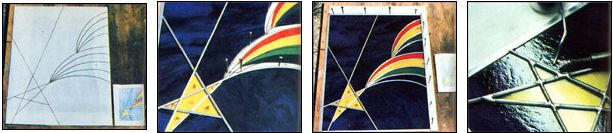

FROM LEFT: To create a stained glass artwork, make an initial sketch, then draw a full-sized pattern on graph paper. . . . Once you've cut and numbered the glass segments, start at the lower left corner and ? ""fanning"" out from that spot ? set your pieces and lead strips in place. The lead ends will have have to be cut at varying angles to insure smooth-fitting joints you may also need to trim some panes' edges to help them slip into their ""holders""). . . . When the entire sun-catcher is assembled? and braced with farrier's nails ? you're ready to . . . solder the pieces together. Note the distinctive cross and ""V"" solder junctions. . .